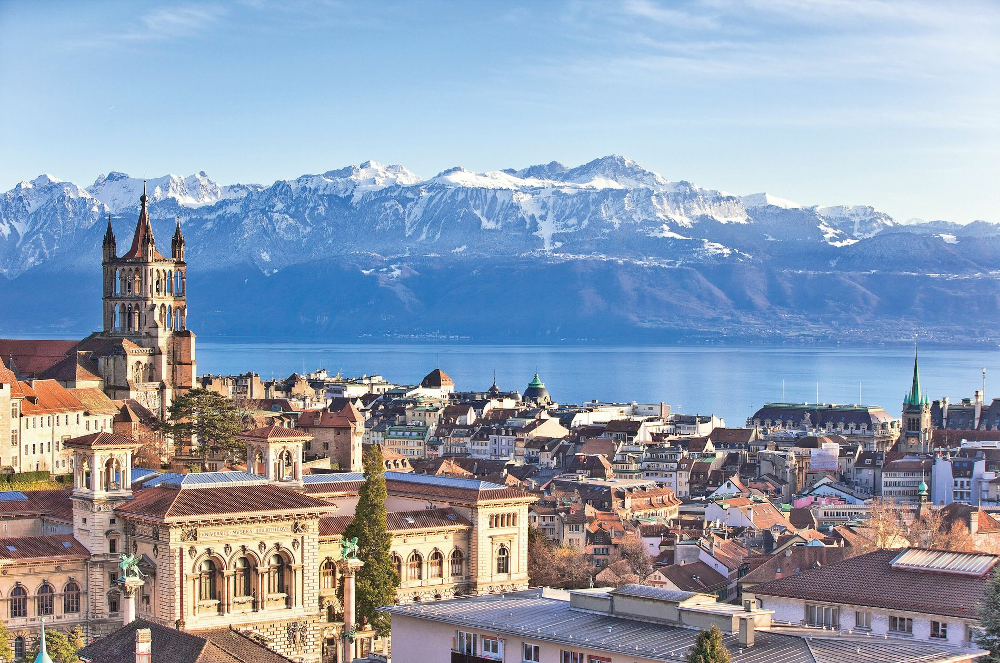
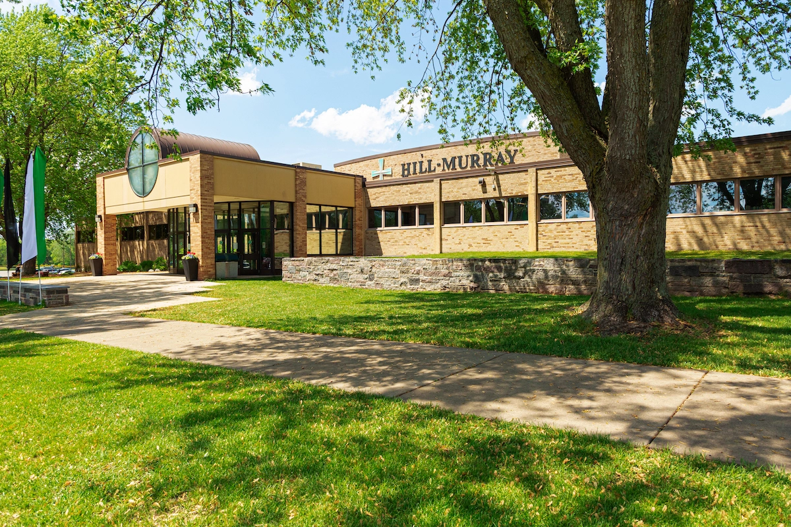

I was born in Tempe, Arizona. I lived in Arizona for 6 years before moving to Lausanne, Switzerland for 2 years. After living in Switzerland, I moved to Minnesota where I went to high school at Hill-Murray. While at Hill-Murray, I was 2 two-sport varsity captain in golf and alpine skiing. I also graduated cum laude and applied to several different colleges. I chose to attend Elon because of its strong communications program and excellent location. While orginally a film and television major, I decided to change my major to Strategic Communications and Sociology after finding out I have a strong interest in public relations and marketing.
 